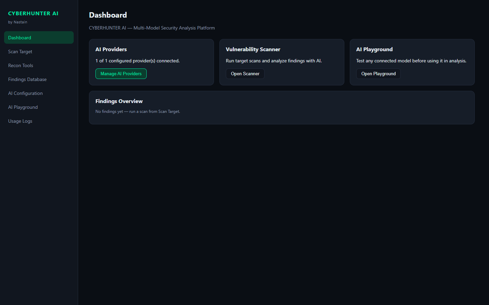
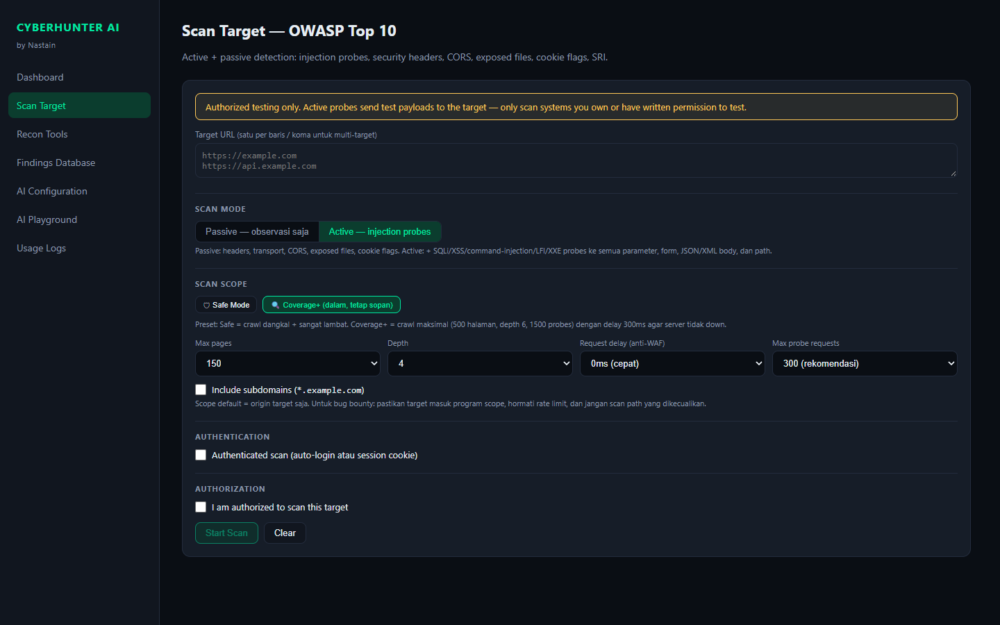
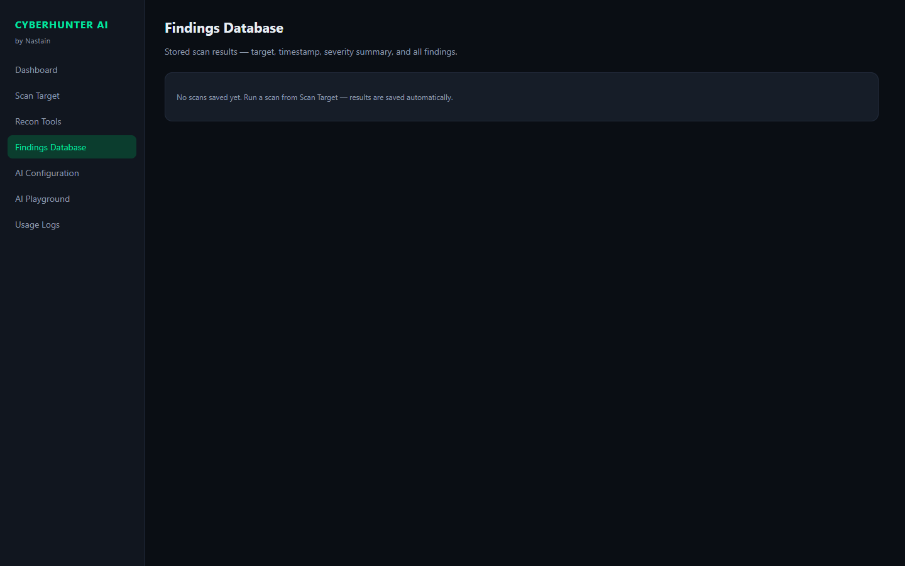
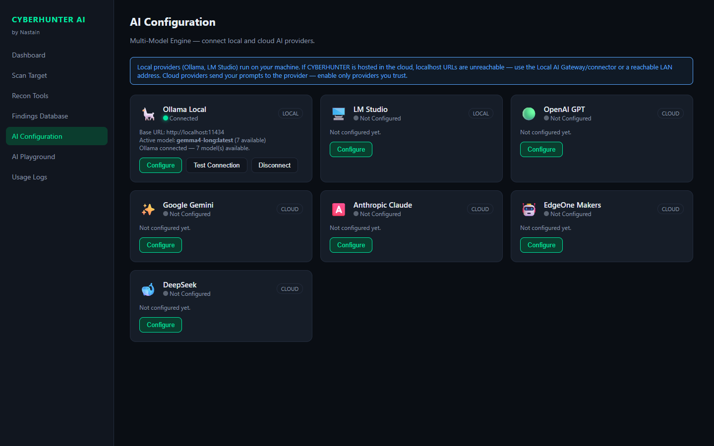
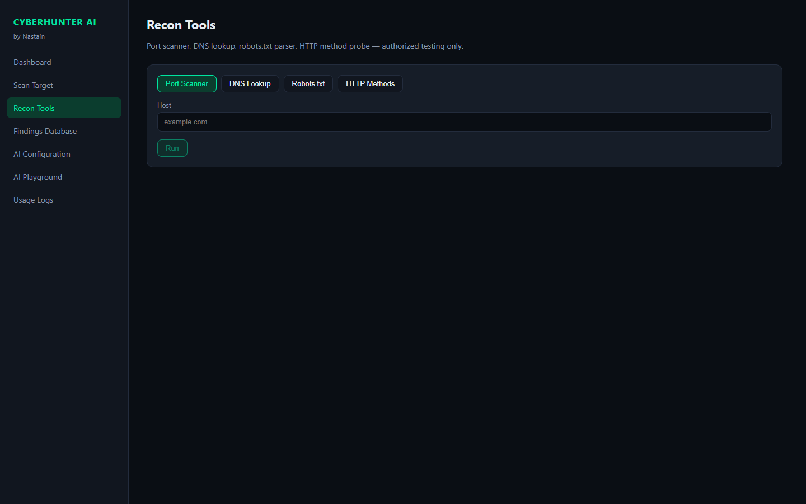
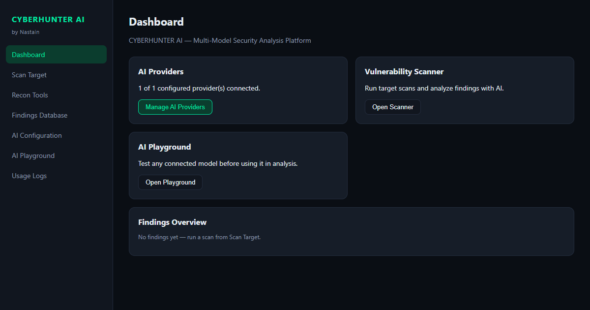

Otomasi assessment — cakupan jauh lebih luas dari testing manual.
Menemukan celah sebelum dieksploitasi pihak tidak bertanggung jawab.
Setiap temuan: payload, request/response, severity & rekomendasi.
Hanya untuk sistem berizin — etika & dampak minimal.

Multi-halaman, subdomain, form, JS bundle + parameter mining & filename mutation.
SQLi, XSS, cmdi, LFI, SSRF, XXE, CORS, headers — aktif & pasif.
JS challenge (WAF splash) di-solve otomatis via headless Chromium.
6 provider model — triage temuan, dampak & prioritas mitigasi.

Error-based, blind time-based (konfirmasi ganda), UNION extraction 15 kolom.
Reflected, stored & DOM — diverifikasi eksekusi JS via headless browser.
Marker aritmatika → output CYBERHUNTER_49, bukan refleksi biasa.
Fingerprint PHP/CMS → ruleset CVE (php2shell, Drupalgeddon2, Joomla, Laravel).
SQLi, XSS, cmdi, LFI, SSRF, XXE, CORS, headers, CVE — terklasifikasi.
Critical/High/Medium/Low/Info — chart interaktif + filter.
Payload persis, lokasi parameter, request & response mentah.
Panduan perbaikan + laporan HTML bilingual (EN/ID) format XRay.

React 18 · TypeScript · Vite — dashboard, live log, severity chart.
Node.js · Express — crawler, probe engine, Puppeteer.
±90 payload OWASP · 75+ param mining · DOM XSS verified.
6 provider (cloud & lokal) — key terenkripsi, usage logs.
